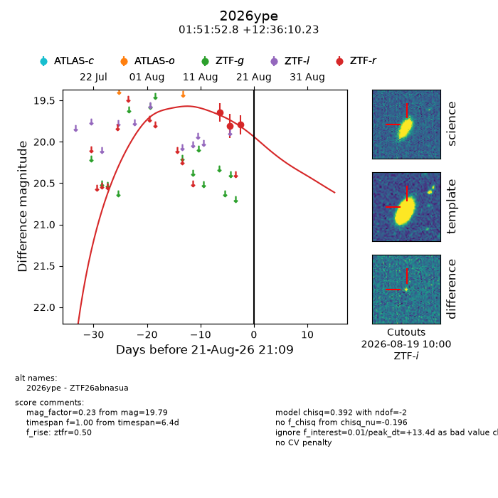
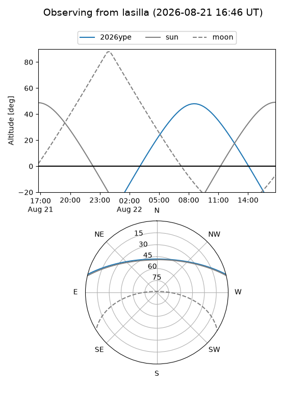
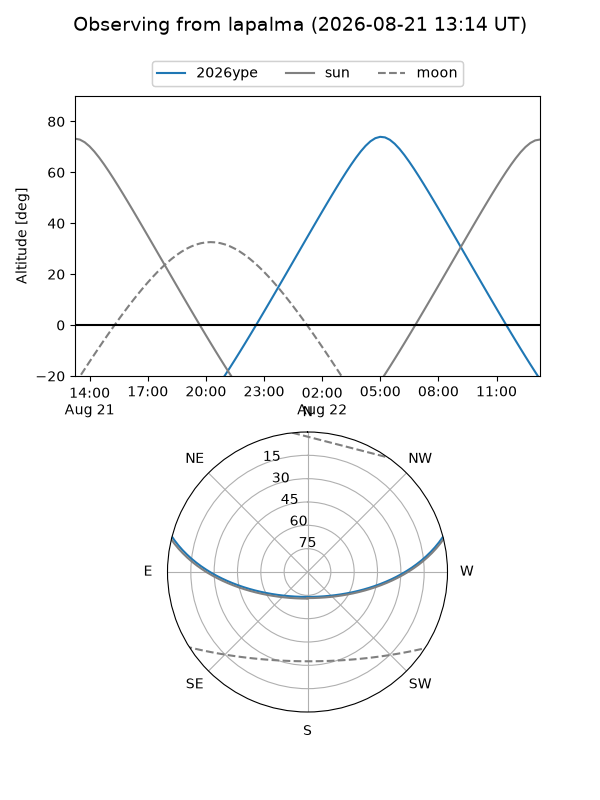
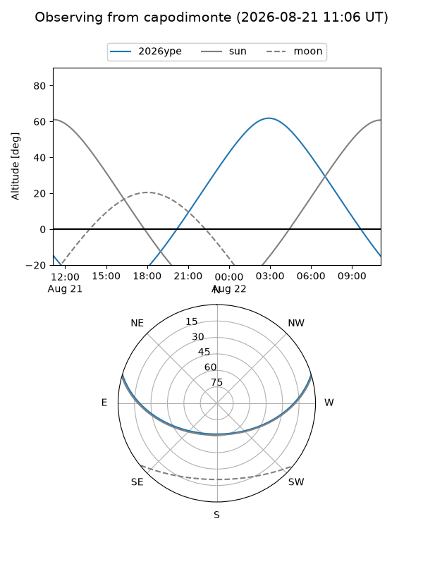
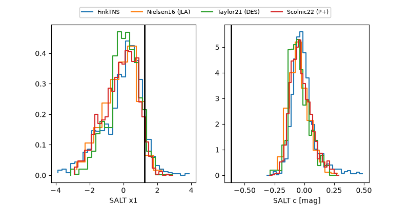

2026ype
Target 2026ype at 2026-08-21 21:12
Aliases and brokers:
FINK-ZTF: ztf.fink-portal.org/ZTF26abnasua
Lasair-ZTF: lasair-ztf.lsst.ac.uk/objects/ZTF26abnasua
ALeRCE-ZTF: alerce.online/object/ZTF26abnasua
YSE-PZ: ziggy.ucolick.org/yse/transient_detail/2026ype
TNS name: wis-tns.org/object/2026ype
Direct TNS query: direct search
alt names
ZTF26abnasua (ztf,fink_ztf)
2026ype (tns,yse)
Coordinates:
equatorial (ra, dec) = 27.9699,+12.60284
equatorial (HMS+DMS) = 01:51:52.77,+12:36:10.23
galactic (l, b) = (145.1186,-47.64827)
Flags:
TNS type: nan
peak dt: +13.4
Photometry:
last ztfr=19.79
3 ztfr detections
Lightcurve

Visibility



Additional plots
